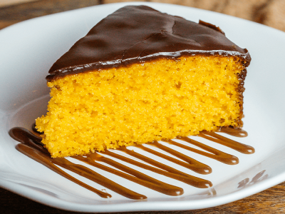

Bolo de Cenoura
Ingredientes
- 02 xícaras de farinha
- 01 xícara de açúcar
- 1/2 xícara de óleo
- 03 ovos
- 350g de cenoura
- 01 colher de chá de essência de baunilha
- 01 pitada de sal
- 01 colher de sopa de fermento
Obs: os ingedientes devem estar em temperatura ambiente
Modo de Preparo
- Descascar e bater as cenouras com o óleo, ovos, essência de baulinha e açúcar
- Em um recipiente, colocar a farinha, o sal e o fermento e misturar.
- Em seguida, misturar o restante dos ingredientes
- Assar em uma assadeira pequena